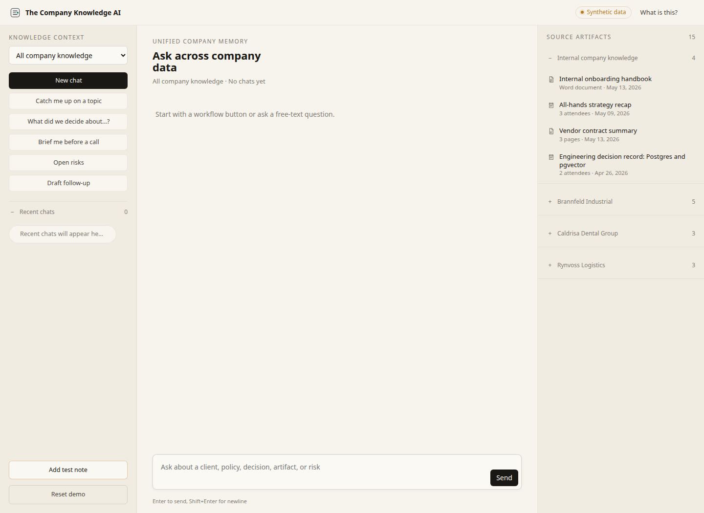

Company knowledge matters
Customer records, contracts, financials, source code, operations, and internal know-how are not casual inputs.
Private AI implementation
Systems built around your workflows and deployed where your data needs to stay.
PhD Theoretical Physics / High-performance computing / AI engineering / Based in Europe
They want the productivity of modern AI, but they need clear control over what happens to company knowledge, prompts, logs, outputs, access rights, and operational data.
Customer records, contracts, financials, source code, operations, and internal know-how are not casual inputs.
Leadership needs to know where data goes, what gets stored, who can access it, and how it is governed.
Teams experiment with AI because it is useful. The company needs a controlled path before shadow AI becomes normal.
The AI system needs to connect to existing tools, review steps, permissions, and everyday work.
Modern AI can improve speed, quality, and decision-making. But serious companies cannot build around tools where the data boundary is unclear.
Customer records, legal documents, financial information, internal knowledge, source code, operational processes, and strategic plans need explicit decisions about storage, logging, access, retention, and governance.
The solution is not to avoid AI. The solution is to build private AI systems with clear workflow boundaries, data control, human review, and maintainable architecture from the beginning.
Private AI becomes valuable when it reaches real work. You do not have to start at step one. If you already have a use case, a pilot, or an internal technical team, I can meet you where you are. Focused assessments typically start around 2.500€ after a free, no-commitment discovery call.
Private AI Workflow Assessment
For companies that know they need AI but are not sure where to start, what is safe, or what is worth building.
Outcome: workflow map, risk review, recommended first pilot, and implementation roadmap.
Find the first safe workflowFirst Private AI Pilot
For teams ready to build a constrained system around one real workflow.
Outcome: working pilot, data boundaries, review logic, evaluation criteria, and architecture that can grow.
Build the first pilotProduction AI Workflow System
For companies that have a pilot and need to make it reliable, integrated, maintainable, and usable by a team.
Outcome: permissions, observability, quality checks, integrations, fallback paths, and handover.
Move to productionAI Infrastructure & Inference Optimization
For technical teams where latency, cost, private deployment, GPU usage, or open-source model serving matters.
Outcome: serving architecture, cost and latency review, deployment plan, and performance improvements.
Optimize the stackThe point of private AI is not ideology. The point is control. The work is to turn that control into systems that fit your tools, rules, review steps, and operational constraints.
Decide where data, prompts, logs, outputs, embeddings, access rights, and retention policies live before the system becomes operational.
Start from the work people already do: documents, handoffs, exceptions, approvals, internal knowledge, and existing software.
Use automation where it helps, and preserve review, judgment, escalation, and accountability where the business needs them.
Production means evaluation, permissions, observability, fallback paths, documentation, and handover beyond the first demo.
Document-heavy workflows, private data, internal knowledge, production pipelines, and systems that need to be useful beyond the demo.

Public sector & enterprise
In collaboration with DigitFlow. Now available as a product package.

Privacy tech
Privacy-first model validation for teams that cannot use real records in development or testing.

Open-source reference
Public, synthetic demo of a private assistant that answers from a company's own knowledge, with a citation for every claim. Try the live demo.

Education tech
Backend and AI infrastructure for Mark My Words, supporting real-time student feedback.
Conference keynote
Presented at the Spanish National Conference on the Future of AI in Europe: how companies can adopt AI while keeping control over sensitive data, internal knowledge, and deployment choices.
"Daniel is helping us as a freelancer to build AI and machine learning solutions for our clients. He is delivering exceptionally good work. He is very intelligent and knows what he is talking about."
"Daniel is a brilliant freelancer. Hardworking, smart, creative and personable. I could not recommend him more."
"Professional, smart and friendly. Daniel delivers outstanding work, and has a solid grasp of technical domains. We value his work, and hope to continue engaging with him in future."
"It has been a privilege to have Daniel on our team. From day one, he proved himself an exceptional professional, excelling in every task and constantly improving our projects."
"Daniel is a great asset to have on any team ! He's very knowledgable and smart, always gets the client's needs and delivers the right solution for them. Working with him has been very enjoyable."
"I was consistently impressed by his dedication, professionalism, and ability to quickly develop effective solutions to complex problems. A highly skilled professional and valuable team player."
08 - AI Use-Case Scorecard
A 5-minute scorecard to evaluate whether a real business process is frequent, painful, clear, data-ready, and safe enough for a first private AI pilot.
Have a promising use case? Book the assessmentEssay / 2026-04-27
The flagship definition: private AI means control over the model and control over the data you feed it. Everything else follows from that.
Read full articleEssay / 2026-04-28
What happens when employees are already using AI on company work, and why blocking it is weaker than building a sanctioned private path.
Read full articleEssay / 2026-04-30
Most business workflows need instruction following, structured outputs, cost control, and low latency. That often points to smaller open-source models.
Read full articleThe first discovery call is free and carries no commitment. Focused Private AI Workflow Assessments usually start around 2.500€ for a one-week, 25-30 hour engagement. Pilots, production builds, and optimization work are scoped after we understand the workflow, data, risk profile, and internal team capacity.
It is strongly preferred, because I can give a much better assessment when I can inspect representative data directly. If the data is too sensitive to share, we can work around it: your team can run internal analysis and walk me through data quantity, quality, structure, and examples. In that case, the quality of my recommendations depends heavily on the quality and completeness of that internal analysis. For pilots, I usually need controlled access, but I can work through SSH or VPN on your own servers without copying confidential data locally.
Yes, when the terms are properly drafted and make sense for both sides. I expect confidentiality requirements in serious company work. GDPR, the EU AI Act, and processor obligations are treated as design requirements, but legal compliance should still be reviewed by your legal or compliance team.
A focused assessment is usually about one week. A first pilot often takes a few weeks if the workflow owner is available and the team can move quickly. Production systems and infrastructure optimization depend on the number of integrations, review steps, permissions, and deployment constraints.
At minimum: a workflow owner, access to people who do the work, and a clear view of the data involved. For build work, we also need the right technical access, deployment constraints, and a decision-maker who can resolve tradeoffs around risk, usability, and scope.
That is often ideal. I can advise your team on architecture and implementation, collaborate as an AI engineering specialist, or take ownership of a focused build. If the project becomes larger than one person should handle, I can also pull in trusted partner companies.
This is not for companies looking for a generic chatbot demo, a loose AI strategy workshop, or a tool recommendation with no implementation path. It is for teams that see data, internal knowledge, and processes as strategic assets and want AI systems that respect that reality.

About
I am Daniel Panea, an AI engineer with a PhD in Theoretical Physics and a background in high-performance computing and machine learning.
I work with companies that want to use AI in real operations but cannot ignore privacy, compliance, data ownership, or maintainability. My strength is working across the full path: understanding the business workflow, identifying the right use case, designing the architecture, and building the system end to end.
Next step
If your company wants AI productivity without giving up control over data, internal knowledge, and business processes, that is usually the right place to start.